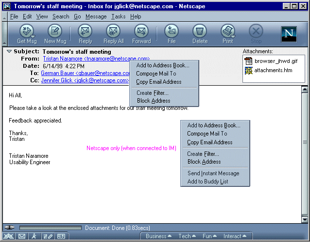
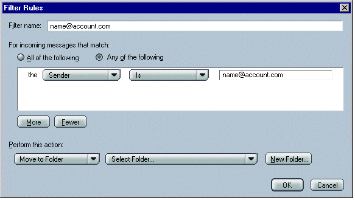
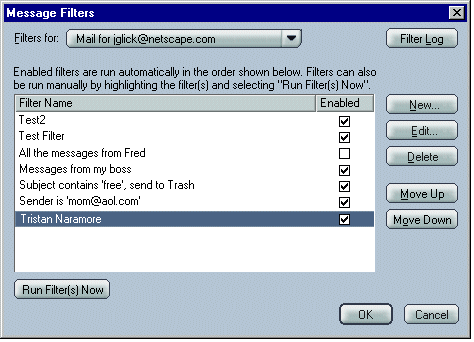
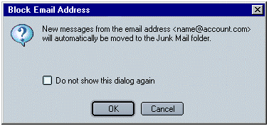
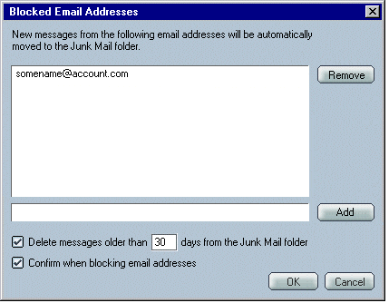
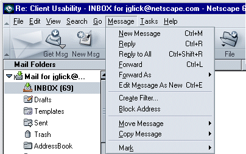

|
MachV/Mozilla: Mail |
UI Specification
|
|
Filters Prefill & Block Address |
Last
Modification:
|
|
Author: Jennifer Glick |
Status: Mostly Complete |
||||||||||
|
Quicklinks: Create a Filter |
Feature Team
|
Note: Block Address feature is no longer planned.
Prefill Filter: Provide an easy method for users to create a simple filter by prefilling a filter rule based on a user selected message. Geared toward Advanced Beginners and Intermediate users. A nice way of introducing the filter feature to users.
Block Address: Provide a way for
users to filter messages from particular addresses
automatically. Users don't have to setup their own filters or
even see or verify any of the filter dialogs. Gear toward Beginning
and Intermediate users. Although not the most effective way of
blocking mail from spammers, this feature gives users a sense of
control.
Clicking on a From, To or Cc name in the mail envelope area opens a menu which allows users to "Create Filter" based on the current message. (Note: the context menu is the same.)

Once the user selects the "Create Filter", item from the open message header, the Message Filters and Filter Rules dialogs open. The Filter Rules dialog has focus. The window is prefilled with information from the message.

Filter Name: The filter name field is prefilled with the email address that was clicked on in the mail message envelope.
If a filter with that name already exists, the email address is appended with a number to make it unique. For example, "name@account.com-1" when "name@account.com" is already being used as the name of a filter. This check will occur when the user selects "Create Filter" so that the Filter Rules dialog opens with a valid filter name prefilled.
Conditions: The first conditions line is prefilled with: "the 'Sender' 'Is' <email_address>". Regardless of whether the user clicked on a "From", "To", or "Cc", the filter is created using "the ' Sender' ' Is' <email_address>".
Users can add or change conditions as desired.
The then user selects an Action to be associated with this filter.
The user clicks OK on the Filter Rules dialog and it closes. The Message Filters dialog now has focus and the newly created filter is displayed and selected in the list box. This will show users their filter was successfully created and is enabled. It will also hopefully educate users about what dialog they can return to if they want to change the filter, and what dialog to use to create a new filter by themselves.

If the user clicks on "OK" on the Filter Rules dialog without defining an Action, an alert dialog is opened. For example, the default Action is "Move to Folder". If the user does not select a destination folder and clicks the "OK" button, an alert opens, "Please select a destination folder".
Clicking on a From, To or Cc name in the mail envelope
area opens a menu which enables users to Block messages from a
particular address. (Note: the context menu is the
same.)
When the user selects "Block Email Address", from the menu
above, a confirmation dialog opens.

If the user clicks "OK", the dialog closes, the address is
added to the Blocked Email Addresses list and the user is returned to
the mail message. If the user clicks "Cancel", the dialog
closes and the user is returned to the mail message.
When new message is received in the Inbox from an address
on the Blocked Email Addresses list, it is automatically moved into
the "Junk Mail" folder. The Junk Mail folder is a Local Folder and
shared across all accounts. It is created by default for new
users. It can not be deleted and it can not be
renamed.
An email message, explaining the Block Sender feature and
the purpose of the Junk Mail, will be included in the Junk Mail
folder. Robin to provide.
From a menu in the Three Pane Mail window (tbd, see
section below), users can open the "Blocked Email Addresses" dialog
to add or remove addresses from it.

Using the "Delete messages older that X days from the Junk
Mail folder" setting, users can have their Junk Mail folder emptied
automatically. The default is checked. Emails are
removed as necessary on exit.
The "Confirm when blocking email addresses" setting will
display the Block Email
Address dialog when the block sender action is
requested. The default is checked.
When the user attempts to add a new email address to the
blocked list using this dialog, we should check to make sure the
email address is a valid format, for example <name@account.com>,
and avoid duplicate email addresses. An error dialog should
open as appropriate: "Please enter a valid email address". "An
entry with that email address already exists".
Addresses should be listed in alphabetical
order.
If a message is selected in the thread pane, but the message pane is closed users can access the Create Filter and Block Address features from the "Message" menu.

Users need to be able to access the "Blocked Email Addresses" list window so that they can view, add or delete addresses. The menu item "Blocked Email Addresses" is grouped with the "Message Filters" menu item. This is currently in the "Edit" menu but the plan is to hopefully move these items into a "Tools" (tbd) type of menu.
News. Neither of these features, Prefill Filter or Block Sender, are currently available for News accounts. These items should not appear in the menus when a News account has focus. Prefill Filter - technically a filter based on a sender of a newsgroup posting could be created, but the filter would only be effective for filtering Mail messages, not news postings. Blocking a Sender for a News Account is really a Kill File feature.
AOL (Netscape only). Neither of these features are currently available for AOL accounts. These items should not appear in the menus when an AOL account has focus.
Netscape.net WebMail (Netscape only). Prefill Filter and Block Address features should be available for WebMail.